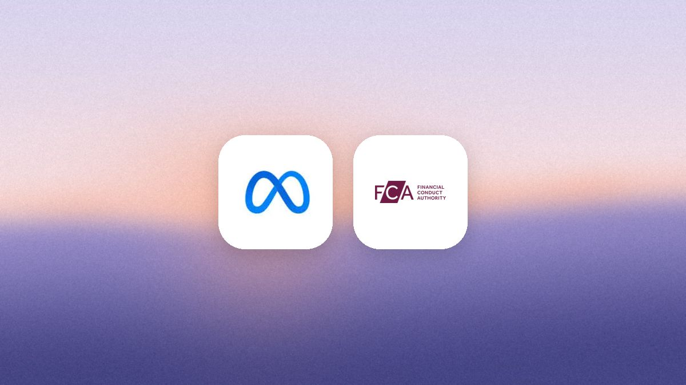
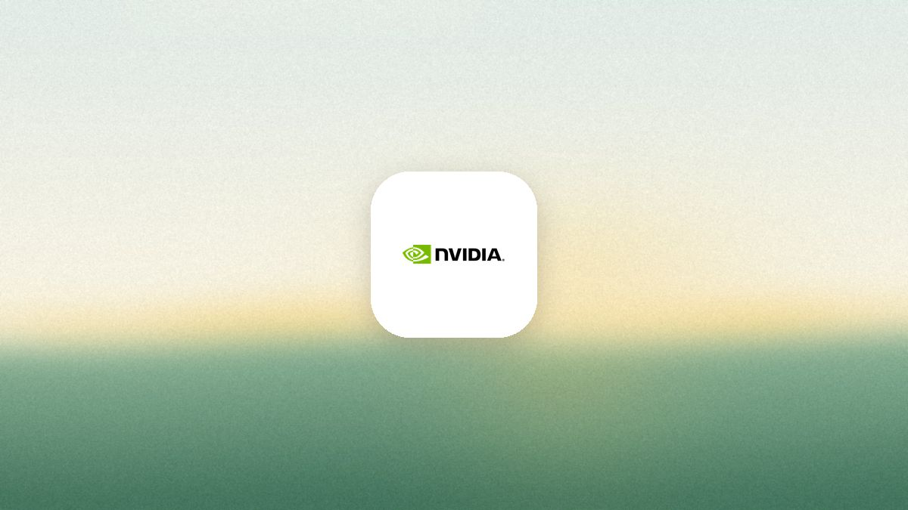
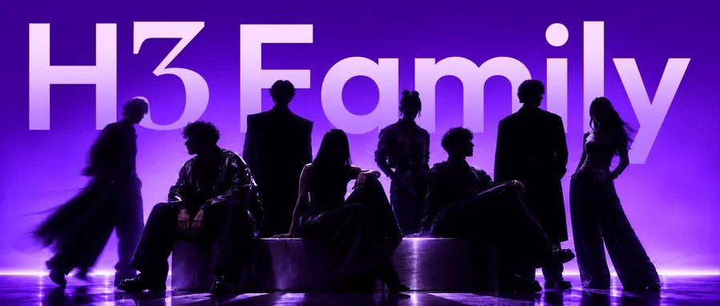

AI
Brief
Thursday edition
UK and US regulators press Meta over its Muse agent
Also: OpenAI cuts how far GPT-6.2 plans go, Canada pays more for homegrown compute, Nvidia holds servers back from Southeast Asia, and MiniMax sells video at cents a clip.
What matters today

Regulators press Meta on Muse
Meta turned down the UK regulator's offer to test Muse first.
- UK: the FCA asked to test Muse in its sandbox before the UK launch and Meta declined. The FCA wants to see how agents make payments for shoppers.
- US: Montana's attorney general leads a multistate probe and demands records on how Muse collects data and profiles non-users; Meta has 30 days.
Why it mattersPersonal agents that read mail and spend money now get the scrutiny banks get. Agent makers that let regulators test first will enter new markets sooner than those that ship and argue later.
GPT-6.2 plans run out sooner
OpenAI fixes a billing error that made GPT-6.2 too cheap.
- The change: subscribers now hit limits 40% faster on Astra and 25% faster on Sol than the week before, still later than on GPT-6 Astra and GPT-6.1 Sol.
- Make-good: no back charges; Go, Plus, Pro and Business get an extra saved reset, and Business gets Fast Mode free to year end. Posted late on November 25.
Why it mattersFlat-rate AI plans are really meters set by the vendor's costs, and the meter can move overnight. Any team or product that leans on a subscription's limits now carries that pricing risk.
Canada pays more for local compute
Canada adds $700 million to its AI Compute Access Fund.
- The tilt: it pays up to 80% of compute costs bought from a Canadian-owned provider, against 50% for other clouds; Canadian providers got 67% before.
- Who: Canadian firms under 500 staff with revenue or a Series A. A health and life sciences call runs to January 4, 2027, and 45 more companies get over $52 million.
Why it mattersOttawa is using subsidies to steer startups from US clouds to Canadian ones. For Canadian AI builders the cheapest compute is now local, which builds the demand Canadian providers need.

Nvidia holds servers from Asia
Nvidia reportedly pauses server shipments to four Asian countries.
- Where: Malaysia, Singapore, Thailand and Indonesia, while Nvidia checks that partners such as Dell and Super Micro meet US export rules.
- Why there: Chinese firms rented Nvidia chips in data centers in the region. Banks are reportedly delaying billions in loans for new centers there.
Why it mattersRenting computers abroad was how Chinese labs kept up with US ones, and that route is closing. Southeast Asia, where many firms run AI close to their users, may see tighter supply too.

MiniMax prices video by the second
MiniMax introduces the H3 family of video and image models.
- Prices: H3 at up to 2K from $0.08 a second, H3-Highspeed from $0.04 and H3-Lite from $0.025 a second; a five-second Lite clip costs about $0.20.
- Open base: in 100 days since H3 went open source, developers made 1,472 versions of it. The family is available on MiniMax's Open Platform.
Why it mattersShort video now costs cents a clip, cheap enough to make dozens of ad versions per product. Video stops being a premium feature and becomes something any app can turn out in bulk.
Also in the news
- OpenAI Private Inference: a small group of business customers is testing, in alpha, a way to run queries on OpenAI's models so OpenAI cannot see the data; announced November 25.
- Hy4 flash on a desktop: Tencent releases compressed weights that run its model on a 64GB Mac mini at about 17 tokens a second, streaming parts from the SSD.
- Sakana Marlin modes: the research agent adds Twilight 2.0 and Midnight 2.0, which spend more computing for faster or deeper reports, and better PowerPoint export.
- Qwen-Audio-3.1: Alibaba's hosted speech recognition grows from 30 to 59 languages, speech output to 65 and live voice to 53, at the same prices.
- Moonshot distillation: the Kimi maker reportedly trains on answers from Google and Meta models as OpenAI and Anthropic block copying; Z.ai's GLM-5.5 reportedly misses its November target.
- Bitbucket Mergeability API: a new API tells tools and AI assistants what is blocking a pull request, bringing its checks together in one answer.